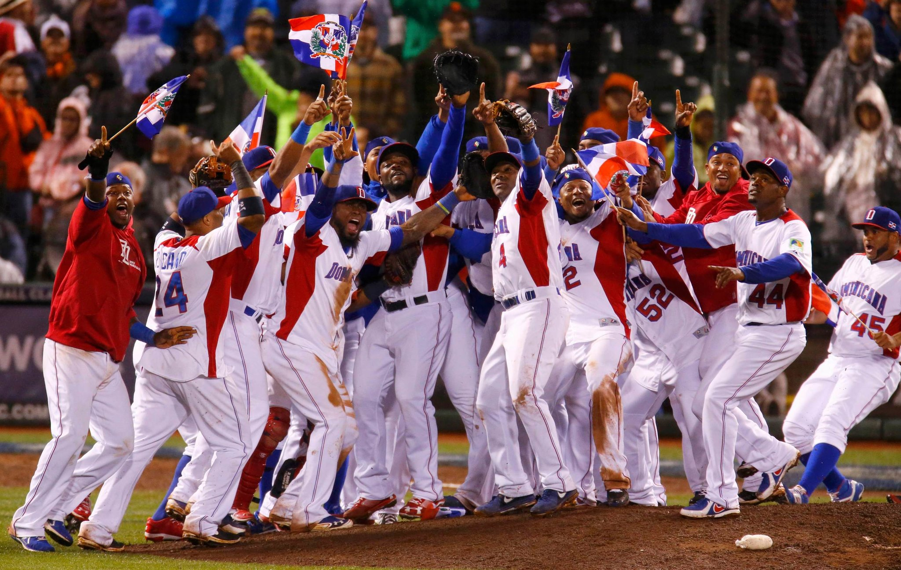
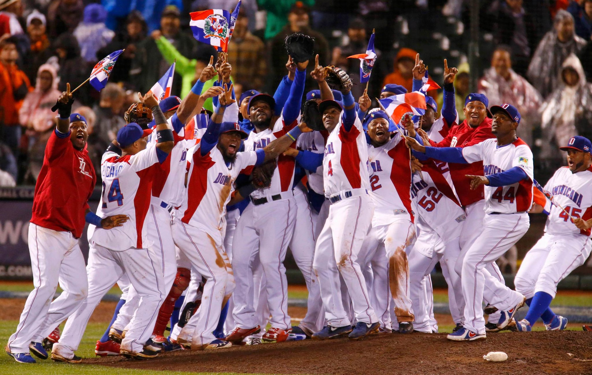

2013
分組預賽將改回 2006 年的單循環制。複賽仍維持雙敗淘汰制。在 2009年預賽各組最後一名之球隊，必須先與其他經邀請之參賽國進行資格賽晉級後，才能進入會內賽；爾後每屆首輪比賽預賽各組最後一名之球隊，下屆比賽必須與其他經邀請之參賽國進行資格賽晉級後，才能進入會內賽。準決賽及冠軍戰同2006 年。
多明尼加🇩🇴 冠軍 3 比 0 波多黎各🇵🇷；日本🇯🇵 及荷蘭🇳🇱 並列第三。
分組預賽將改回 2006 年的單循環制。複賽仍維持雙敗淘汰制。在 2009年預賽各組最後一名之球隊，必須先與其他經邀請之參賽國進行資格賽晉級後，才能進入會內賽；爾後每屆首輪比賽預賽各組最後一名之球隊，下屆比賽必須與其他經邀請之參賽國進行資格賽晉級後，才能進入會內賽。準決賽及冠軍戰同2006 年。
多明尼加🇩🇴 冠軍 3 比 0 波多黎各🇵🇷；日本🇯🇵 及荷蘭🇳🇱 並列第三。
